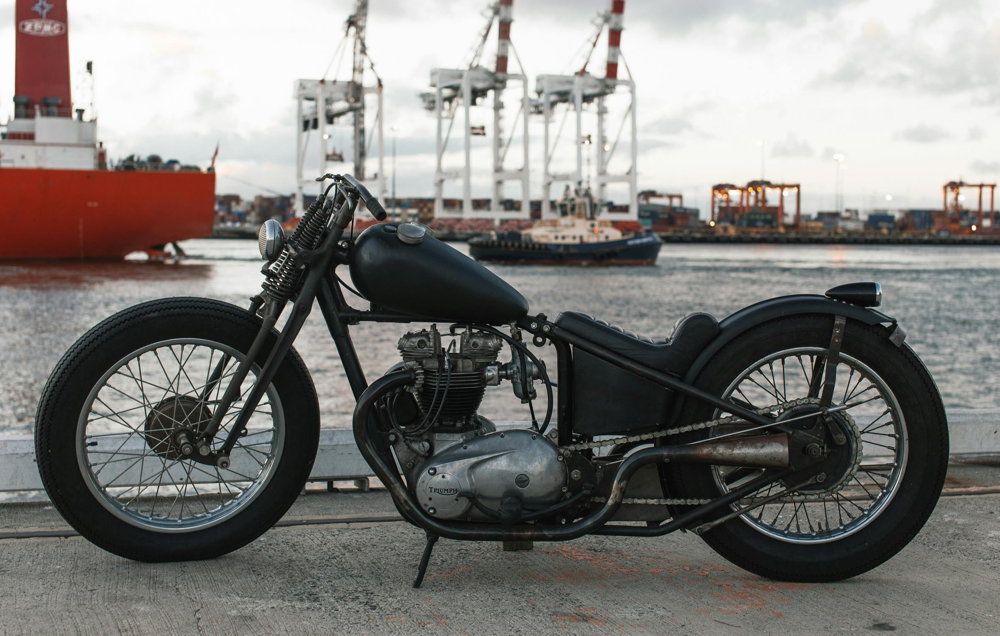
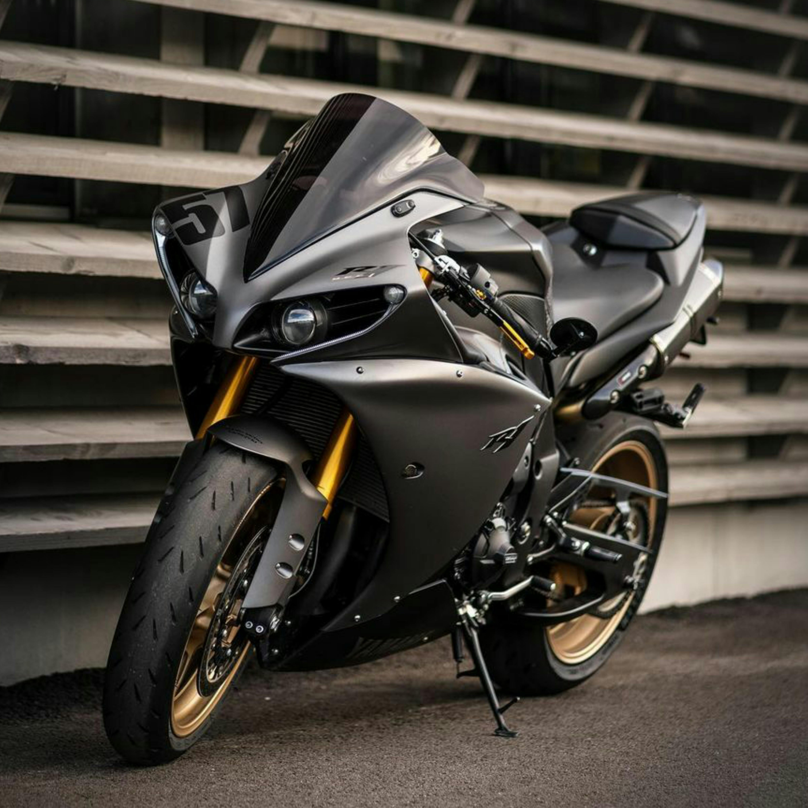

Some random informations

Scooters are small, lightweight two-wheeled vehicles designed for urban commuting.
Scooters are known for their ease of use, fuel efficiency, and maneuverability, making them a popular choice for city travel.

Cafe racers are lightweight, stylish motorcycles designed for speed and agility.
Built for short, fast rides between cafes, these bikes emphasise performance and a retro aesthetic.

Cruisers are motorcycles characterised by their low seat height, relaxed riding position, and classic styling.
They often feature a V-twin engine, forward-set footpegs, and wide handlebars, designed for comfortable long-distance riding.

Sports bikes are high-performance motorcycles designed for speed, agility, and precision handling.
They feature a sleek, aerodynamic design, a forward-leaning riding position, and powerful engines.